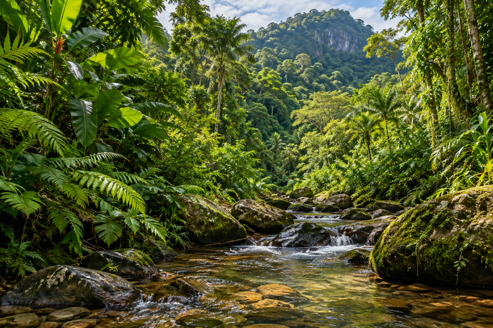
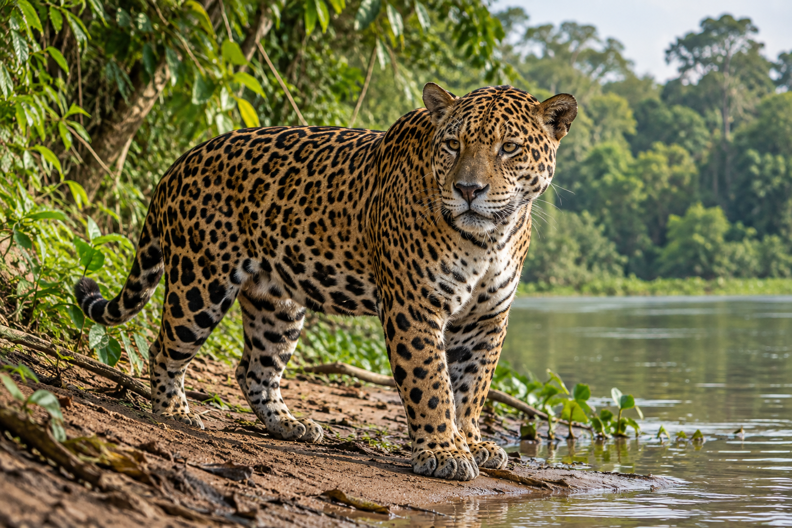
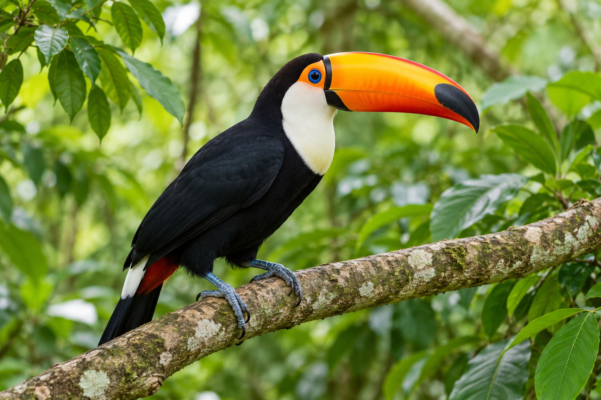

Nossa missão
Despertar o interesse pela vida selvagem e transformar curiosidade em atitude de preservação.
Educação ambiental
Explore a fauna brasileira, descubra como vivem os animais e aprenda o que cada um de nós pode fazer para proteger os ambientes naturais.

Quem somos
O WebZoo é uma plataforma de educação ambiental do Zoológico de São Paulo. Apresentamos animais e seus ambientes, compartilhamos curiosidades e incentivamos o cuidado com a natureza.
Despertar o interesse pela vida selvagem e transformar curiosidade em atitude de preservação.
Ser uma referência digital em educação ambiental, acessível em qualquer dispositivo.
Respeito à vida, conhecimento, inclusão e responsabilidade com o meio ambiente.
Conheça de perto

O maior felino das Américas e uma espécie essencial para o equilíbrio dos ecossistemas.
Conheça a ficha →
Ave de bico marcante que ajuda a espalhar sementes e regenerar a vegetação.
Conheça a ficha →
O maior roedor do mundo, semiaquático e frequentemente encontrado perto da água.
Conheça a ficha →WebZoo em números
A onça-pintada é o maior felino das Américas.
A capivara é o maior roedor do mundo.
O bico do tucano-toco ajuda a controlar a temperatura do corpo.
O tamanduá-bandeira não tem dentes.